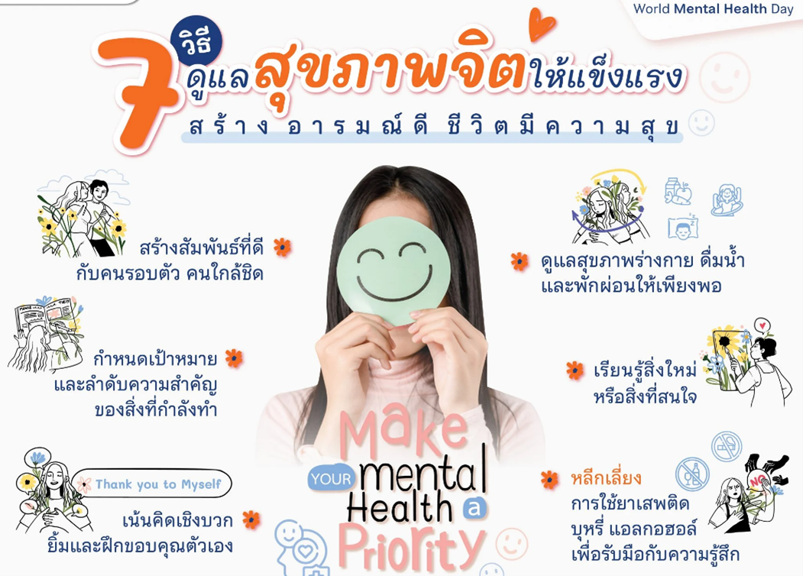
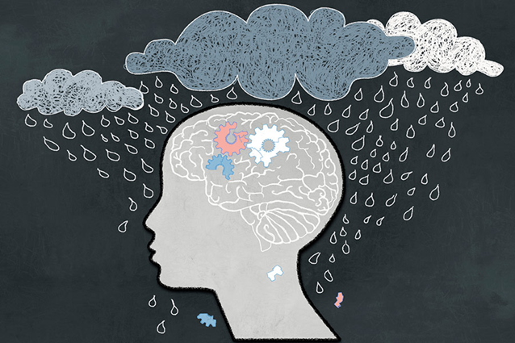
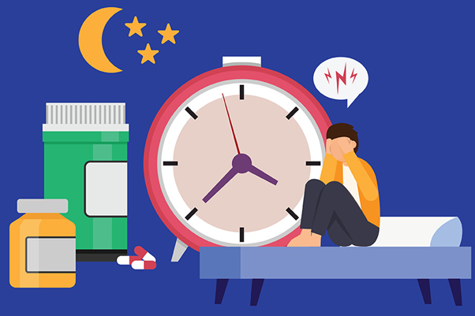
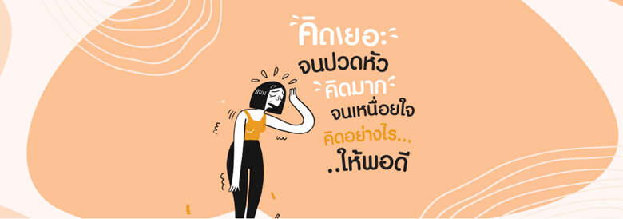
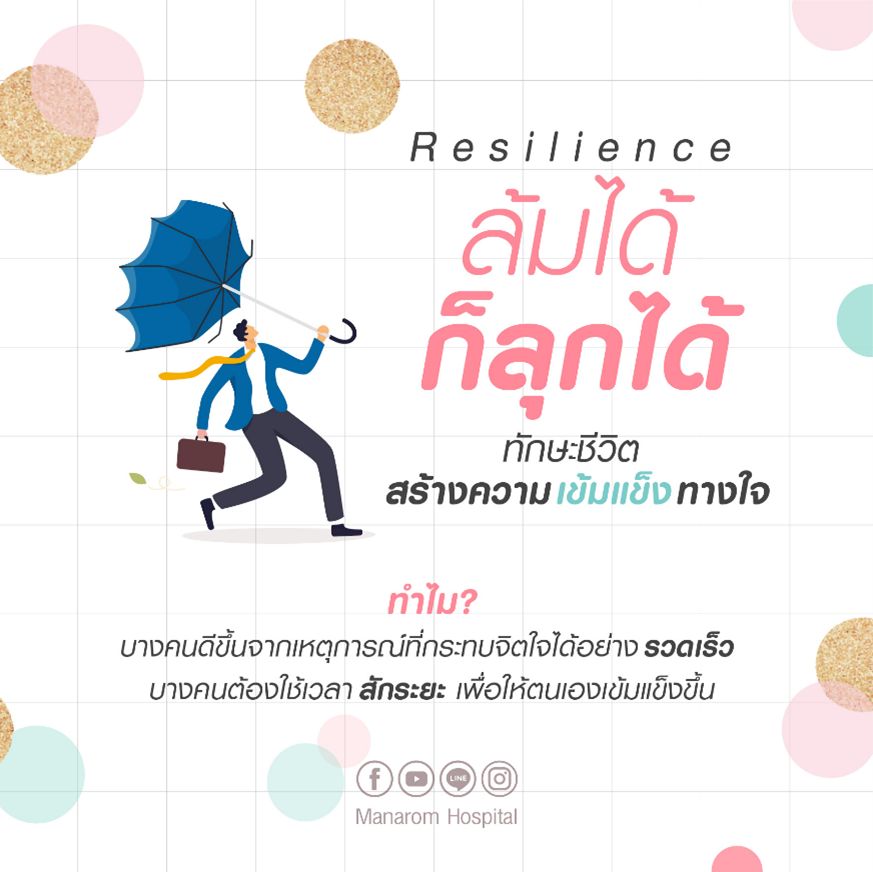

หัวข้อที่ 1 บทความสาระความรู้เกี่ยวกับสุขภาพจิต

ชื่อบทความ : สุขภาพจิตคืออะไร ? ทำไมสุขภาพจิตจึงสำคัญต่อชีวิต
เนื้อหาย่อย : สุขภาพจิต คือ สภาวะรวมของอารมณ์ ความรู้สึก และจิตใจ สุขภาพจิตที่ดีส่งผลให้ ร่างกายแข็งแรงและมีความสุข ผู้ที่มีสุขภาพจิตที่ดีสามารถสานสัมพันธ์กับคนรอบข้างและรู้จักปรับตัว...
อ้างอิงบทความจาก : รศ.พญ. ฐิติพร ศุภสิทธิ์ธำรง. จิตแพทย์ผู้ชำนาญการด้านจิตเวชศาสตร์ผู้สูงอายุ
ลิงก์บทความ อ่านต่อ....... »
ชื่อบทความ : ความเครียด ทำลายสมอง ทำยังไงไม่เสี่ยง! โรคหลอดเลือดสมอง
เนื้อหาย่อย : เมื่อคนเราเครียด ร่างกายจะมีการตอบสนองที่ขึ้นอยู่กับหลาย ๆ องค์ประกอบ อาทิ ก่อให้เกิดการอักเสบ ความดันโลหิตสูง และปัญหาเกี่ยวกับหลอดเลือด...
อ้างอิงบทความจาก : MedPark Hospital.com
ลิงก์บทความ อ่านต่อ....... »
ชื่อบทความ : 7 โรคทางจิตเวชที่พบบ่อย
เนื้อหาย่อย : โรคทางจิตเวชเป็นโรคที่สังเกตได้ยาก หากคนใกล้ตัวหรือตัวเราเองไม่ได้มีอาการ วันนี้เราจะพาไปดูโรคจิตเวชที่พบได้บ่อยกัน...
อ้างอิงบทความจาก : โรงพยาบาลบางปะกอก-รังสิต 2
ลิงก์บทความ อ่านต่อ....... »
ชื่อบทความ : 7 วิธีดูแลสุขภาพจิต สร้างอารมณ์ดี ชีวิตมีความสุข
เนื้อหาย่อย : 10 ตุลาคมวันสุขภาพจิตโลก (World Mental Health Day) โดยองค์การอนามัยโลกได้ ประกาศครั้งแรกเมื่อ พ.ศ. 2535 เพื่อรณรงค์ให้ทุกคนตระหนักถึงความสำคัญของสุขภาพจิต...
อ้างอิงบทความจาก : เว็บไซต์ในเครือราชวิทยาลัยจุฬาภรณ์
ลิงก์บทความ อ่านต่อ....... »ชื่อบทความ : ฟางเส้นสุดท้าย มีหลาย Multiverse
เนื้อหาย่อย : หลายคนคงเคยได้ยินประโยคที่บอกว่า การฆ่าตัวตายคือฟางเส้นสุดท้ายของการแก้ปัญหา ในชีวิต แต่..การที่ใครสักคนจะฆ่าตัวตายนั้นเป็นสิ่งที่ห้ามกันไม่ได้ เพราะได้ผ่านการคิดมาก่อนแล้ว...
อ้างอิงบทความจาก : Chanin สุขภาพใจ.com
ลิงก์บทความ อ่านต่อ....... »ชื่อบทความ : เครียดขนาดไหน ควรปรึกษาจิตแพทย์
เนื้อหาย่อย : ความเครียดเป็นส่วนหนึ่งของชีวิตที่หลีกเลี่ยงไม่ได้ แต่เมื่อใดที่มันเริ่มส่งผลกระทบต่อคุณภาพชีวิต การปรึกษาจิตแพทย์อาจเป็นทางออกที่ดีที่สุด...
อ้างอิงบทความจาก : ปีติ คลินิก - คลินิกสุขภาพจิต
ลิงก์บทความ อ่านต่อ....... »
ชื่อบทความ : เป็นโรคซึมเศร้าไม่ใช่เรื่องผิด การรักษาโรคซึมเศร้าหายขาดได้
เนื้อหาย่อย : การรักษาโรคซึมเศร้าทุเลาได้หากเปิดใจเริ่มรักษา การสร้างความเข้าใจและลดการตีตราต่อผู้ที่ประสบกับโรคซึมเศร้าเป็นส่วนสำคัญในการสร้างสังคมที่มีสุขภาพจิตที่ดีขึ้น...
อ้างอิงบทความจาก : ปีติ คลินิก - คลินิกสุขภาพจิต
ลิงก์บทความ อ่านต่อ....... »
ชื่อบทความ : นอนไม่หลับทำยังไงดี พร้อมวิธีรักษาอาการนอนไม่หลับ
เนื้อหาย่อย : เทคนิครักษาอาการนอนไม่หลับ อย่างมีประสิทธิภาพ การนอนไม่หลับ (Insomnia) เป็นปัญหาสุขภาพที่พบบ่อยซึ่งส่งผลกระทบต่อชีวิตประจำวันของหลาย ๆ คน...
อ้างอิงบทความจาก : ปีติ คลินิก - คลินิกสุขภาพจิต
ลิงก์บทความ อ่านต่อ....... »
ชื่อบทความ : คิดมากจนปวดหัว คิดเยอะจนเหนื่อยใจ คิดอย่างไรให้พอดี
เนื้อหาย่อย : การคิดมาก คิดเยอะ เป็นผลเนื่องจากความวิตกกังวล ยิ่งใช้เวลาในการคิดมากเท่าไหร่ ยิ่งต้องใช้พลังงานมากขึ้น ส่งผลให้รู้สึกเหนื่อย อ่อนเพลีย หมดพลัง นอนไม่หลับ...
อ้างอิงบทความจาก : หนึ่งฤทัย กล่ำเงิน พยาบาลวิชาชีพ โรงพยาบาลมนารมย์
ลิงก์บทความ อ่านต่อ....... »
ชื่อบทความ : Resilience ล้มได้ก็ลุกได้ ทักษะชีวิต สร้างความเข้มแข็งทางใจ
เนื้อหาย่อย : สังเกตหรือไม่ว่าทำไมบางคนถึงปรับปรุงให้ดีขึ้นจากการรับประทานอาหารที่จิตใจของเรา บ่อยครั้งในบางคนก็มักจะสักระยะเพื่อให้ตนเองเข้มแข็งขึ้น...
อ้างอิงบทความจาก : นาถวีณา ดำรงพิพัฒน์ ประธานนักจิตวิทยาคลินิก โรงพยาบาลมนารมย์
ลิงก์บทความ อ่านต่อ....... »หัวข้อที่ 2 แนะนำช่องวิดีโอ สาระความรู้เกี่ยวกับสุขภาพจิต

ชื่อคลิปวิดีโอ : DMH Animation | Depression [โรคซึมเศร้า]
เนื้อหาย่อย : ภาพยนตร์อนิเมชั่นนำเสนอปัญหาด้านสุขภาพจิต อาการที่พบได้บ่อย ปัจจัยที่ทำให้เกิด ปัญหา การดูแลรักษาเบื้องต้น และการป้องกันปัญหาในระยะยาว...
ลิงก์วิดีโอ (Youtube) : คลิกเพื่อรับชม

ชื่อคลิปวิดีโอ : DMIND แอปคัดกรองภาวะซึมเศร้า
เนื้อหาย่อย : สสส. ขอแนะนำแอปพลิเคชัน DMIND ตัวช่วยคัดกรองผู้มีภาวะซึมเศร้า ลดความเสี่ยงที่ ทำให้คนไทยเสียชีวิตก่อนวัยอันควร...
ลิงก์วิดีโอ (Youtube) : คลิกเพื่อรับชม

ชื่อคลิปวิดีโอ : มาตรวจสุขภาพใจกัน DMIND Application สำหรับคัดกรองผู้ที่มีภาวะซึมเศร้า
เนื้อหาย่อย : วิธีการใช้งาน DMIND Application สำหรับคัดกรองผู้ที่มี ภาวะซึมเศร้า ประชาชนสามารถเข้าถึง DMIND Application ได้ทาง LINE Official Account และ Facebook...
ลิงก์วิดีโอ (Youtube) : คลิกเพื่อรับชม
ชื่อคลิปวิดีโอ : เครียด ซึมเศร้า หมดไฟ แพนิค ปัญหาทางใจเกิดขึ้นเพราะอะไร? รักษาอย่างไรดี ? Doctor's Talk EP.14
เนื้อหาย่อย : หมอจิมมี่ แพทย์ผู้เชี่ยวชาญด้านเวชศาสตร์ป้องกัน และ หมอดิว แพทย์ผู้เชี่ยวชาญเฉพาะ ทางสาขาจิตเวชศาสตร์ จะมาพูดคุยเรื่องสุขภาพทางใจเป็นครั้งแรก...
ลิงก์วิดีโอ (Youtube) : (ไม่มีลิงก์ระบุในเอกสารอ้างอิง)
ชื่อคลิปวิดีโอ : ปัญหาจริงๆของสุขภาพจิต : ความจริงที่โหดร้าย
เนื้อหาย่อย : สุขภาพจิตที่ดีและอาการป่วยทางจิตนั้น เป็นเรื่องที่ซับซ้อนมากๆ สภาวะทางจิตนั้น จัด อยู่ในรูปแบบของสเปกตรัม ซึ่งส่วนใหญ่ก็ไม่มีตัวบ่งชี้ทางชีวภาพที่ชัดเจน...
ลิงก์วิดีโอ (Youtube) : คลิกเพื่อรับชม
ชื่อคลิปวิดีโอ : ทำความรู้จักกับ "โรคซึมเศร้า" โดยจิตแพทย์
เนื้อหาย่อย : ในยุคนี้... “โรคซึมเศร้า” ใคร ๆ ก็รู้จัก จริงไหม? สิ่งที่เรารู้มาถูกต้องจริง ๆ หรือเปล่า? จึงรวมทุกเรื่องเกี่ยวกับโรคซึมเศร้าไม่ว่าจะเป็น สาเหตุ การรักษา รวมไปถึงการสร้างภูมิคุ้มกันจิตใจให้ตัวเอง...
ลิงก์วิดีโอ (Youtube) : คลิกเพื่อรับชม
ชื่อคลิปวิดีโอ : คิดมาก หยุดคิดไม่ได้ แบบไหนปกติ แบบไหนควรพบจิตแพทย์?
เนื้อหาย่อย : อาการคิดมาก หยุดคิดไม่ได้ เป็นเรื่องปกติไหม? ทำอย่างไรดีเมื่อคิดมาก? "อย่าคิดมาก" คำที่ได้ยินกันบ่อย ๆ พูดได้ไหมเมื่อมีใครมาปรึกษา มาหาคำตอบกับรายการพูดคุย Alljit...
ลิงก์วิดีโอ (Youtube) : คลิกเพื่อรับชม
ชื่อคลิปวิดีโอ : เข้าใจโรคจิตเภท ที่หลายคนบอกว่า “บ้า” แท้จริงคือโรคทางสมอง | R U OK EP.209
เนื้อหาย่อย : ภาพของผู้ป่วยโรงพยาบาลจิตเวช คือภาพที่หลายคนมักกลัวและไม่เข้าใจว่าผู้ป่วยกำลังเผชิญกับอะไร และคำว่า “บ้า” คือคำตีตราที่ทำให้เขาเหล่านั้นกลายเป็นมนุษย์ที่ขาดพร่อง...
ลิงก์วิดีโอ (Youtube) : คลิกเพื่อรับชม
ชื่อคลิปวิดีโอ : อธิบายโรคทางจิตต่างๆ ใน 8 นาที
เนื้อหาย่อย : โรคทางจิตไม่ได้น่ากลัวเสมอไป ผู้ป่วยที่เป็นโรคทางจิตนั้นล้วนต้องการความเข้าใจ เพื่อที่จะรักษาให้หายจากอาการนั้นๆได้...
ลิงก์วิดีโอ (Youtube) : คลิกเพื่อรับชม
ชื่อคลิปวิดีโอ : โรควิตกกังวล ความกลัว แพนิค เหมือนหรือแตกต่างกันยังไง
เนื้อหาย่อย : Learn & Share EP. นี้ขอชวนเพื่อน ๆ กลับมาทวนความจำถึงโรควิตกกังวล (Anxiety Disorder) อีกครั้งและมาลงลึกถึงรายละเอียดอื่น ๆ ไม่ว่าจะเป็น 4 ระดับของความวิตกกังวล...
ลิงก์วิดีโอ (Youtube) : คลิกเพื่อรับชม